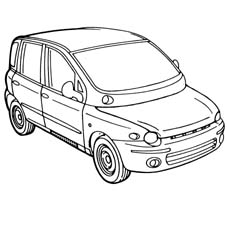
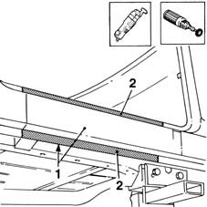
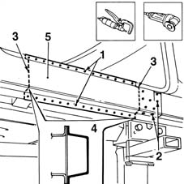
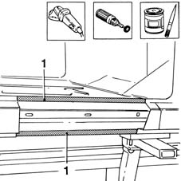
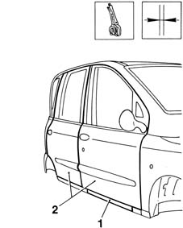
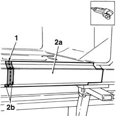
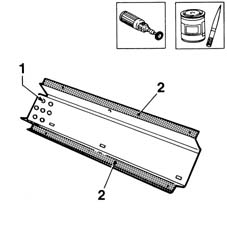
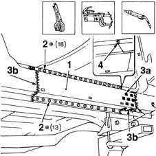
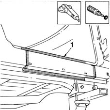
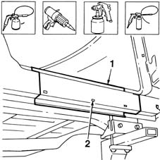

7210E45 partial door sill rail outer trim
- Path
- Procedures > 72 PANELS AND FRAME > 7210 REMOVING REFITTING > 7210E EXTERNAL PARTS > 7210E45 partial door sill rail outer trim
- Kind
- repair procedure (removal / refitting; the operation number is the code)
- Applies to
- all engines; all production periods
- Interactive page
- https://sloeber94.github.io/elrnDB-fMltpl/en/#/2892325
Applies to: all engines; all production periods
 Removing
Removing
 Refitting
RefittingRaise the floor carpet.
Move all the parts.
Check if any of the connected parts are deformed by checking body alignment dimensions. Use appropriate measurement tools (reference rigs, templates or gauges).
Straighten the body if necessary.

Applies to: all engines; all production periods
1. Remove the PVC treatment from the door sill to expose the spot welds using a vibrating cutter and appropriate blade.
2. Use a rotary brush to clean the panel edges to reveal the spot welds.

Applies to: all engines; all production periods
1. Use a chamfering machine to crop the weld spots indicated in the figure.
2. Use a drill fitted with an appropriate bit to drill out the weld spots in the areas shown in the figure.
3. Use a circular saw to follow the cutting lines shown in the figure.
4. Cross-sections of key areas as a guide to allow the operator to adjust cutting position and depth in order to avoid damage to the underlying panels.
Use a chisel and mallet to remove spots ground previously.
5. Remove the door sill from the car.

Applies to: all engines; all production periods
Straighten the door sill compartment edges using a mallet and profiled stake.
Use a grinding wheel to remove the spot weld residues.
Use a rotary brush to clean the treated areas.
1. Apply the electroweldable paint finish to edges in contact with the part.

Applies to: all engines; all production periods
Refitting
Removing1. Fit the part in its seating after rough-grinding and secure using self-locking grippers.
2. Refit the front and rear doors in the closed position.
Check the alignment and that the surrounding gap is even, then close the front and rear doors.

Applies to: all engines; all production periods
1. Use a circular saw to cut the part ready for fitting.
2. Remove part (2a) and trim off any excess (2b).

Applies to: all engines; all production periods
1. Make equidistant holes as shown in the figure.
Use a rotary brush to remove the corrosion-proofing from around the inner and outer edge of the part.
2. Apply the electroweldable paint finish to edges in contact with the car.

Applies to: all engines; all production periods
1. Position the part on the car and secure using self-locking grippers.
2. Use a spot welder to weld the points indicated.
3. Use a MIG welder to fill weld the holes made previously (3a) and to seam weld (3b) the areas shown in the figure.
4. Carry out the hard soldering.

Applies to: all engines; all production periods
Correct any deformations in the panel using a profiled stake and mallet.
1. Use a grinding wheel to level the weld and remove.
Use a rotary brush to clean the newly-welded areas.

Applies to: all engines; all production periods
Apply rust-proofing to newly-welded areas.
1. Seal the joint lines between the part and the car.
Apply paint.
2. Apply wax oil inside the door sill rail.

Applies to: all engines; all production periods
Refit all fouling parts.